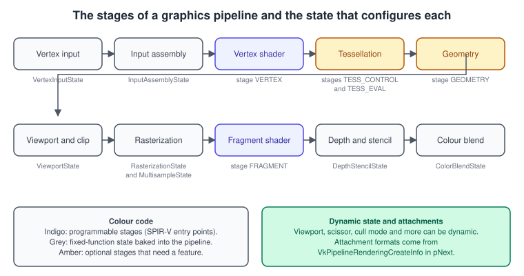
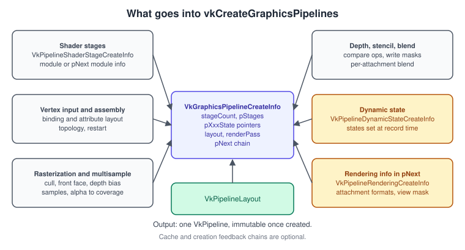
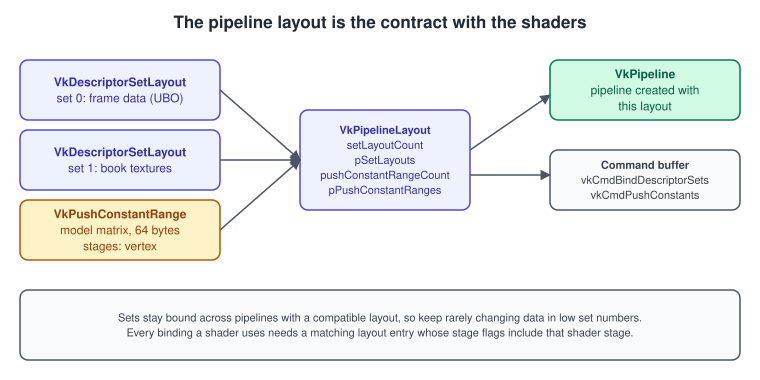
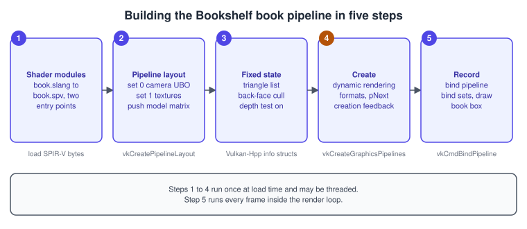
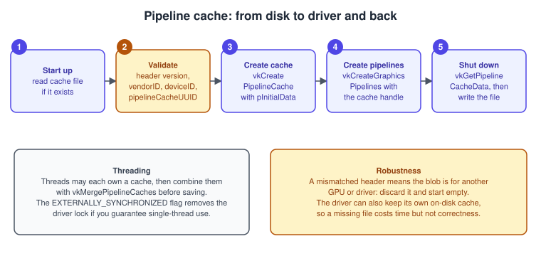

The Vulkan Graphics Pipeline
|
This content was generated with the assistance of AI and should be verified against the official documentation before being relied on in production. |
A Vulkan draw call does not read global state. Everything that influences how vertices become pixels (which shaders run, how vertices are
fetched, how triangles are rasterised, how fragments are tested and blended, and in which formats the results are written) is baked into
one immutable object, the VkPipeline, and you bind that object before drawing. The price is that creating a pipeline is slow, because
the driver compiles the shaders for the actual GPU and the actual state; the benefit is that nothing is compiled behind your back at
draw time. This page walks through every stage of the graphics pipeline, the create-info structure that configures it, the objects that
accompany it (pipeline layout, pipeline cache, creation feedback) and ends with a complete pipeline for the Bookshelf book.
The facts were checked in November 2026. The version documented is Vulkan 1.4 (Vulkan headers 1.4.3xx, LunarG SDK 1.4.363.0), with Vulkan 1.3 as the minimum for the running example, because the examples use dynamic rendering and creation feedback, both core since Vulkan 1.3. Platforms are Windows, Linux, 64-bit Android 10 or later devices (Vulkan 1.1 or later, Vulkan 1.4 on Android 16), and macOS through the portability layers described in Vulkan on Apple: MoltenVK and KosmicKrisp. The code is C++20 with Vulkan-Hpp RAII handles, shaders are written in Slang, and the same shader is shown in GLSL and HLSL where it helps.
In the Vulkan Bookshelf running example (C++20, Vulkan-Hpp RAII, VMA, GLFW or SDL3, Slang shaders with GLSL and HLSL alternatives) this page covers the triangle with dynamic rendering and sync2 stage of the example, which becomes the pipeline of the lit book box, then of the textured book in Bookshelf 1: From Triangle to Textured Book. The other parts of the draw are on neighbouring pages: attachments and render scopes in Dynamic Rendering, states that can change without a new pipeline in Dynamic State, Shader Objects and Pipeline Libraries, vertex and index buffers in Vertex Input and Drawing, depth, stencil, blending and multisampling in Depth, Stencil, Blending and MSAA, descriptors in Descriptors and Push Constants, shader modules in Shaders, SPIR-V and Shading Languages, and byte layouts of the blocks the shaders read in Shader Memory Layout. The other APIs' counterparts are The Metal Render Pipeline, The OpenGL Rendering Pipeline and The WebGL Rendering Pipeline; the API-independent concept is in The Rendering Pipeline, and why explicit APIs move this work to pipeline creation in Explicit vs Implicit APIs.
The stages and their state
A graphics pipeline is a fixed sequence of stages, some of which you program with shaders and some of which you configure with state. Each
stage reads the output of the previous one and each is controlled by one member of VkGraphicsPipelineCreateInfo.

| Stage | Kind | Configured by | Notes |
|---|---|---|---|
Vertex input |
Fixed |
|
Bindings (stride, per-vertex or per-instance) and attributes (location, binding, format, offset). Can be dynamic with |
Input assembly |
Fixed |
|
Primitive topology and primitive restart. Topology classes decide which topologies may be switched dynamically. |
Vertex shader |
Programmable |
|
Runs per vertex, writes the clip-space position and any interpolants. |
Tessellation |
Optional |
Control and evaluation stages plus |
Needs the |
Geometry |
Optional |
|
Needs the |
Viewport and clip |
Fixed |
|
Viewport and scissor rectangles. Almost always dynamic, with only the counts baked. |
Rasterization |
Fixed |
|
Polygon mode, culling, winding, depth bias, line width, sample count and coverage. |
Fragment shader |
Programmable |
|
Runs per covered fragment or per sample. |
Depth and stencil |
Fixed |
|
Tests and writes, ignored when the pipeline has no depth or stencil format. |
Colour blend |
Fixed |
|
Per-attachment blend equations and write masks, logic ops. Ignored when no colour attachment is declared. |
Two cross-cutting members complete the picture. The pipeline layout (the layout member) declares which descriptor sets and push
constants the shaders may access, and the attachment description tells the pipeline in which formats it will write. Before Vulkan 1.3
that description was a VkRenderPass plus a subpass index; with dynamic rendering it is a VkPipelineRenderingCreateInfo chained in pNext.
For the shape of the whole creation call, this figure lists what flows into vkCreateGraphicsPipelines:

Why everything is baked
The driver compiles shaders into GPU code that depends on the state around them: output formats decide how colours are packed, blend state may be implemented in the shader epilogue on some hardware, vertex fetch may be inlined into the vertex shader, and rasteriser settings can change which hardware path is taken. If the application could change any of these after the pipeline exists, the driver would have to recompile or keep many variants, and that is precisely the hitch that older APIs hid inside a draw call. Vulkan makes the cost explicit: you pay it when you create the pipeline, you can pay it on a worker thread, and you can store the result in a cache.
State that is cheap to change on all hardware can be declared dynamic so that it is not baked; that is the subject of the dynamic state page, and the minimum every pipeline should do is make the viewport and scissor dynamic.
Creating a pipeline
vkCreateGraphicsPipelines takes a device, an optional pipeline cache, and an array of create-info structures, and it writes an array of
pipeline handles. Creating several pipelines in one call lets the driver share work and lets you create them on one worker thread. If some
creations fail, their handles are VK_NULL_HANDLE and the returned result comes from one of the failures; with
VK_PIPELINE_CREATE_EARLY_RETURN_ON_FAILURE_BIT the pipelines after the first failure are also null.
Member of VkGraphicsPipelineCreateInfo |
Meaning |
|---|---|
|
Chain for |
|
Creation flags (see below). In Vulkan 1.4 a |
|
One |
|
Vertex fetch and primitive assembly. The vertex input state may be null when the vertex input is dynamic or the pipeline uses mesh shaders. |
|
Only with tessellation stages; holds |
|
Viewport and scissor counts, rasteriser configuration and multisample state. |
|
Needed only when the attachments in use contain a depth or stencil format, or colour attachments. |
|
List of states left open to be set while recording. |
|
|
|
Set |
|
Optional parent for derivative pipelines, requires |
Source: Vulkan specification: Pipelines
Shader stages
Each stage is a VkPipelineShaderStageCreateInfo: the stage bit, the shader module, the entry-point name (pName) and optional
specialization constants. One SPIR-V module can contain several entry points, so the Bookshelf compiles one book.spv that contains
vertexMain and fragmentMain, and both stage structures point at the same module with different names.
Since VK_KHR_maintenance5 was promoted to core in Vulkan 1.4, a module handle is no longer mandatory: the module member can be
VK_NULL_HANDLE if a VkShaderModuleCreateInfo is chained into the stage’s pNext, which avoids creating and destroying a shader module object just for the creation call.
Either way, the SPIR-V is validated against the enabled features and extensions, so a module that uses a capability the device
did not enable is rejected at creation time by the Khronos validation layer rather than failing mysteriously on the GPU.
Specialization constants
A specialization constant is a constant in the shader whose value is supplied when the pipeline is created. The compiler of the driver can then remove dead branches and unroll loops, so it is the right tool for variants that differ by a handful of values (a flag, a count, a workgroup size) and that would otherwise multiply shader files. The Bookshelf uses one to build two fragment variants from one shader, with and without the cover texture.
// GLSL
layout(constant_id = 0) const bool kUseTexture = true;
layout(constant_id = 1) const int kLightCount = 1;// HLSL for DXC
[[vk::constant_id(0)]] const bool kUseTexture = true;
[[vk::constant_id(1)]] const int kLightCount = 1;#include <vulkan/vulkan_raii.hpp>
#include <array>
#include <cstddef>
#include <cstdint>
// Data for constants 0 and 1 of the fragment stage. Booleans are 4-byte VkBool32 values.
struct FragmentSpecialization {
vk::Bool32 useTexture;
int32_t lightCount;
};
inline constexpr std::array<vk::SpecializationMapEntry, 2> kFragmentEntries{{
{0, offsetof(FragmentSpecialization, useTexture), sizeof(vk::Bool32)},
{1, offsetof(FragmentSpecialization, lightCount), sizeof(int32_t)},
}};
// Keep both objects alive until vkCreateGraphicsPipelines returns.
inline vk::SpecializationInfo makeSpecializationInfo(const FragmentSpecialization& data)
{
return vk::SpecializationInfo{
static_cast<uint32_t>(kFragmentEntries.size()), kFragmentEntries.data(),
sizeof(FragmentSpecialization), &data};
}Each distinct set of specialization values is a different pipeline, so specialise only on values that few variants need and keep the number of permutations in check; see the performance notes below.
Vertex input and input assembly
The vertex input state describes where each attribute lives in memory: a binding has a stride and an input rate, an attribute has a
location, a binding, a format and an offset. The Bookshelf vertex is position, normal and texture coordinate (32 bytes) and is detailed in
Vertex Input and Drawing. The input assembly state holds the topology (point list,
line list or strip, triangle list, strip or fan, patch list and the adjacency variants) and primitiveRestartEnable, which lets a reserved
index value split a strip. Restart is not allowed for list topologies unless an extension enables it; the Bookshelf uses indexed
triangle lists, so it leaves restart off.
The first few VkPrimitiveTopology values and the features that gate the rest:
| Topology | Requirement |
|---|---|
|
Always available. |
|
Not available on devices that report the portability subset without triangle fans (see the Apple page). |
|
|
|
|
Viewport, scissor and the clip space of Vulkan
The viewport state holds counts and, unless they are dynamic, the rectangles themselves. A viewport maps normalised device coordinates to framebuffer coordinates and the depth range; with \( w \) and \( h \) the viewport size, \( (x, y) \) its corner, and \( z_n \) the normalised depth \( \in [0, 1] \), the transform is
\[ x_f = x + \frac{ w }{ 2 }\,( x_n + 1 ), \qquad y_f = y + \frac{ h }{ 2 }\,( y_n + 1 ), \qquad z_f = z_{ min } + z_n\,( z_{ max } - z_{ min } ) \]
The conventions differ from OpenGL in two ways that bite everyone porting code. Vulkan’s clip space has Y pointing down and a depth
range of 0 to 1 (OpenGL’s has Y up and depth -1 to 1). The usual fix for a Y-up projection matrix is to supply a viewport with a
negative height and its Y at the bottom of the render area, which VK_KHR_maintenance1 made legal and which is core since Vulkan 1.1;
a pipeline compiled with this convention flips the winding the rasteriser sees, so pick frontFace to match.
The scissor rectangle clips fragments to an integer rectangle and must be set even when it equals the viewport.
The clip-space conventions are summarised across APIs in
Porting OpenGL to Vulkan, Metal and WebGPU.
Rasterization, multisampling, depth, stencil and blend
These four structures hold the state a fixed-function unit consumes. They have a page of their own, but the members the pipeline needs you to choose are:
| Member | Notes |
|---|---|
|
|
|
|
|
Clamps instead of clipping against the near and far planes; needs |
|
Discards all primitives before rasterisation, for transform-feedback style passes. Dynamic in Vulkan 1.3. |
|
Offsets depth, typically for shadow maps. The enable flag is dynamic in Vulkan 1.3, the factors through |
|
Must be 1.0 unless |
|
Must equal the sample count of the attachments; see Depth, Stencil, Blending and MSAA. |
|
Reversed-Z uses |
|
Per-face stencil ops, masks and reference. |
|
Zero by default, which writes nothing. Set it to |
|
Per attachment; different equations per attachment need the |
Dynamic state and its minimum
VkPipelineDynamicStateCreateInfo lists the states you will set while recording instead of baking them. Vulkan 1.3 promoted
VK_EXT_extended_dynamic_state and most of VK_EXT_extended_dynamic_state2 to core, so on a Vulkan 1.3 device these states can be
dynamic without any extension:
| Group | Dynamic states that need no extension on Vulkan 1.3 |
|---|---|
Viewport and scissor |
|
Rasteriser |
|
Depth and stencil |
|
Vertex input |
|
Blend |
|
When the viewport state is dynamic you still set viewportCount and scissorCount in the pipeline and leave pViewports and pScissors
null, then call vkCmdSetViewport and vkCmdSetScissor before drawing. The Vulkan Guide’s advice is balanced: some implementations may
perform worse with certain dynamic states than with static values, whereas dynamic states can prevent a combinatorial explosion in the number of
pipelines. Make viewport and scissor dynamic always, and decide the rest by measuring.
Source: Vulkan Guide: Dynamic State
The pipeline layout
The pipeline layout is the shader’s interface with the application: it lists the descriptor set layouts, in set order, and the push-constant
ranges. It is created before the pipeline, can be shared by many pipelines, and it is also what you pass to vkCmdBindDescriptorSets and
vkCmdPushConstants.

Descriptor sets that were bound with a layout stay bound when you bind another pipeline whose layout is compatible for those set numbers, which is the reason to keep per-frame data in set 0, per-material data in set 1 and per-object data in the last sets: switching pipelines does not invalidate the low sets. The Bookshelf layout has set 0 for the frame uniform block, set 1 for the book textures and a 64-byte push constant for the model matrix; the descriptors themselves are explained in Descriptors and Push Constants.
#include <vulkan/vulkan_raii.hpp>
#include <array>
vk::raii::PipelineLayout makeBookLayout(const vk::raii::Device& device,
const vk::raii::DescriptorSetLayout& frameSet,
const vk::raii::DescriptorSetLayout& textureSet)
{
// Vulkan-Hpp RAII objects are not implicitly convertible to the C++ handle: dereference them.
const std::array<vk::DescriptorSetLayout, 2> setLayouts{*frameSet, *textureSet};
// 64 bytes: one 4x4 float model matrix, read by the vertex stage only.
const vk::PushConstantRange modelMatrix{vk::ShaderStageFlagBits::eVertex, 0, 64};
vk::PipelineLayoutCreateInfo info{};
info.setSetLayouts(setLayouts).setPushConstantRanges(modelMatrix);
return vk::raii::PipelineLayout{device, info};
}Describing the attachments: VkPipelineRenderingCreateInfo
With dynamic rendering the pipeline does not point at a render pass. It declares the formats it will write in a
VkPipelineRenderingCreateInfo chained into pNext: colorAttachmentCount and pColorAttachmentFormats, depthAttachmentFormat,
stencilAttachmentFormat and a viewMask for multiview. The formats must match those of the attachments that you pass to
vkCmdBeginRendering when the pipeline is bound, or the draw is invalid. The create-info chain also decides whether depth-stencil and
colour-blend states are read at all: they are ignored for formats that are VK_FORMAT_UNDEFINED.
The old way, still found in tutorials of the Vulkan 1.0 era and in older code, creates a VkRenderPass and a VkFramebuffer and
passes the render pass and subpass index to the pipeline. Render passes remain valid but are legacy: dynamic rendering (core in Vulkan
1.3, 2022) replaces them, and the subpass feature of reading a previous attachment is provided by dynamic rendering local read in Vulkan 1.4.
The explanation of both models is on Dynamic Rendering. When you are porting a render-pass pipeline, replace renderPass and
subpass with the chain below and nothing else in the pipeline needs to change.
A complete pipeline: the Bookshelf book
The Slang shader of the lit, textured book is short, and it already shows the interface a pipeline must provide: a frame uniform block in set 0, a texture in set 1 and a push constant.
// book.slang
struct Frame {
float4x4 viewProj;
float4 lampPositionAndRange; // xyz position, w range
};
struct Model { float4x4 model; };
[[vk::binding(0, 0)]] ConstantBuffer<Frame> frame;
[[vk::binding(0, 1)]] Sampler2D coverTexture;
[[vk::push_constant]] ConstantBuffer<Model> pc;
struct VSIn { float3 position : POSITION; float3 normal : NORMAL; float2 uv : TEXCOORD0; };
struct VSOut { float4 clip : SV_Position; float3 worldNormal; float3 worldPos; float2 uv; };
[shader("vertex")]
VSOut vertexMain(VSIn v)
{
VSOut o;
float4 world = mul(pc.model, float4(v.position, 1.0));
o.clip = mul(frame.viewProj, world);
o.worldPos = world.xyz;
o.worldNormal = normalize(mul((float3x3)pc.model, v.normal));
o.uv = v.uv;
return o;
}
[shader("fragment")]
float4 fragmentMain(VSOut i) : SV_Target
{
float3 n = normalize(i.worldNormal);
float3 l = normalize(frame.lampPositionAndRange.xyz - i.worldPos);
float diffuse = max(dot(n, l), 0.0);
float3 albedo = coverTexture.Sample(i.uv).rgb;
return float4(albedo * (0.15 + 0.85 * diffuse), 1.0);
}slangc book.slang -target spirv -entry vertexMain -stage vertex -entry fragmentMain -stage fragment -o book.spvThe C++ below creates the pipeline for a swapchain colour format and a depth format, with dynamic rendering, a dynamic viewport and
scissor, back-face culling, a depth test and blending off. It uses vk::StructureChain so that the rendering-info structure is linked into
pNext for you and sType fields are filled automatically.
#include <vulkan/vulkan_raii.hpp>
#include <array>
#include <cstdint>
#include <fstream>
#include <stdexcept>
#include <string>
#include <vector>
struct Vertex { // 32 bytes, matches the vertex input state below
float position[3];
float normal[3];
float uv[2];
};
std::vector<uint32_t> readSpirv(const std::string& path)
{
std::ifstream file(path, std::ios::binary | std::ios::ate);
if (!file) throw std::runtime_error("cannot open " + path);
const auto bytes = static_cast<size_t>(file.tellg());
if (bytes == 0 || bytes % 4 != 0) throw std::runtime_error("not a SPIR-V file: " + path);
std::vector<uint32_t> words(bytes / 4);
file.seekg(0);
file.read(reinterpret_cast<char*>(words.data()), static_cast<std::streamsize>(bytes));
return words;
}
vk::raii::Pipeline createBookPipeline(const vk::raii::Device& device,
const vk::raii::PipelineCache& cache,
const vk::raii::PipelineLayout& layout,
vk::Format colorFormat, vk::Format depthFormat)
{
// 1. Shader module: one SPIR-V file, two entry points.
const auto code = readSpirv("shaders/book.spv");
vk::ShaderModuleCreateInfo moduleInfo{};
moduleInfo.setCode(code);
vk::raii::ShaderModule module{device, moduleInfo};
const std::array<vk::PipelineShaderStageCreateInfo, 2> stages{{
{{}, vk::ShaderStageFlagBits::eVertex, *module, "vertexMain"},
{{}, vk::ShaderStageFlagBits::eFragment, *module, "fragmentMain"},
}};
// 2. Vertex input: one interleaved binding, three attributes.
const vk::VertexInputBindingDescription binding{0, sizeof(Vertex), vk::VertexInputRate::eVertex};
const std::array<vk::VertexInputAttributeDescription, 3> attributes{{
{0, 0, vk::Format::eR32G32B32Sfloat, offsetof(Vertex, position)},
{1, 0, vk::Format::eR32G32B32Sfloat, offsetof(Vertex, normal)},
{2, 0, vk::Format::eR32G32Sfloat, offsetof(Vertex, uv)},
}};
vk::PipelineVertexInputStateCreateInfo vertexInput{};
vertexInput.setVertexBindingDescriptions(binding).setVertexAttributeDescriptions(attributes);
const vk::PipelineInputAssemblyStateCreateInfo inputAssembly{
{}, vk::PrimitiveTopology::eTriangleList, VK_FALSE};
// 3. Viewport and scissor are dynamic: only the counts are baked.
const vk::PipelineViewportStateCreateInfo viewport{{}, 1, nullptr, 1, nullptr};
vk::PipelineRasterizationStateCreateInfo raster{};
raster.setPolygonMode(vk::PolygonMode::eFill)
.setCullMode(vk::CullModeFlagBits::eBack)
.setFrontFace(vk::FrontFace::eCounterClockwise)
.setLineWidth(1.0f);
vk::PipelineMultisampleStateCreateInfo multisample{};
multisample.setRasterizationSamples(vk::SampleCountFlagBits::e1);
vk::PipelineDepthStencilStateCreateInfo depth{};
depth.setDepthTestEnable(VK_TRUE).setDepthWriteEnable(VK_TRUE)
.setDepthCompareOp(vk::CompareOp::eLess);
// colorWriteMask must be set, otherwise nothing is written.
vk::PipelineColorBlendAttachmentState blendAttachment{};
blendAttachment.setColorWriteMask(vk::ColorComponentFlagBits::eR | vk::ColorComponentFlagBits::eG |
vk::ColorComponentFlagBits::eB | vk::ColorComponentFlagBits::eA);
vk::PipelineColorBlendStateCreateInfo colorBlend{};
colorBlend.setAttachments(blendAttachment);
const std::array<vk::DynamicState, 2> dynamicStates{vk::DynamicState::eViewport,
vk::DynamicState::eScissor};
vk::PipelineDynamicStateCreateInfo dynamic{};
dynamic.setDynamicStates(dynamicStates);
// 4. Attachment formats instead of a render pass.
vk::StructureChain<vk::GraphicsPipelineCreateInfo, vk::PipelineRenderingCreateInfo> chain;
chain.get<vk::PipelineRenderingCreateInfo>()
.setColorAttachmentFormats(colorFormat)
.setDepthAttachmentFormat(depthFormat);
chain.get<vk::GraphicsPipelineCreateInfo>()
.setStages(stages)
.setPVertexInputState(&vertexInput)
.setPInputAssemblyState(&inputAssembly)
.setPViewportState(&viewport)
.setPRasterizationState(&raster)
.setPMultisampleState(&multisample)
.setPDepthStencilState(&depth)
.setPColorBlendState(&colorBlend)
.setPDynamicState(&dynamic)
.setLayout(*layout)
.setRenderPass(nullptr); // dynamic rendering
return vk::raii::Pipeline{device, cache, chain.get<vk::GraphicsPipelineCreateInfo>()};
}At draw time the pipeline is bound once, and the dynamic states are set every frame because they belong to the command buffer, not to the pipeline:
// Inside a command buffer being recorded, between beginRendering and endRendering.
void drawBook(const vk::raii::CommandBuffer& cmd, const vk::raii::Pipeline& pipeline,
const vk::raii::PipelineLayout& layout, vk::Extent2D extent,
const std::array<vk::DescriptorSet, 2>& sets, const float model[16],
const vk::raii::Buffer& vertices, const vk::raii::Buffer& indices, uint32_t indexCount)
{
cmd.bindPipeline(vk::PipelineBindPoint::eGraphics, *pipeline);
cmd.setViewport(0, vk::Viewport{0.f, 0.f, float(extent.width), float(extent.height), 0.f, 1.f});
cmd.setScissor(0, vk::Rect2D{{0, 0}, extent});
cmd.bindDescriptorSets(vk::PipelineBindPoint::eGraphics, *layout, 0, sets, {});
cmd.pushConstants<float>(*layout, vk::ShaderStageFlagBits::eVertex, 0, vk::ArrayProxy<const float>(16, model));
cmd.bindVertexBuffers(0, *vertices, vk::DeviceSize{0});
cmd.bindIndexBuffer(*indices, 0, vk::IndexType::eUint16);
cmd.drawIndexed(indexCount, 1, 0, 0, 0);
}The procedure behind these snippets is the same for any pipeline:
-
Compile the shaders to SPIR-V and create the shader module (or chain the module info into the stage).
-
Create the pipeline layout from the set layouts and push-constant ranges that the shader declares.
-
Fill the fixed-function structures, deciding which states are dynamic.
-
Chain
VkPipelineRenderingCreateInfowith the attachment formats, optionally the feedback structure, and callvkCreateGraphicsPipelineswith the cache. -
Record: bind the pipeline, set the dynamic state, bind descriptors and buffers and draw.

Pipeline creation flags
Creation flags tune how the driver builds the pipeline. They are 32-bit VkPipelineCreateFlagBits in flags and, in Vulkan 1.4, 64-bit
VkPipelineCreateFlagBits2 carried by VkPipelineCreateFlags2CreateInfo, which takes precedence when it is present.
| Flag | Use |
|---|---|
|
Skips optimisation; may shorten creation time. Useful for a quick first version of a pipeline that is rebuilt optimised in the background. |
|
Marks a parent or a child pipeline. They are hints that implementations may use to share work. |
|
Return |
|
When creating an array of pipelines, stop at the first failure and leave the remaining handles null. |
|
Used with graphics pipeline libraries, see Dynamic State, Shader Objects and Pipeline Libraries. |
FAIL_ON_PIPELINE_COMPILE_REQUIRED allows a very effective pattern: try to create the pipeline on the render thread with this flag,
which only succeeds if the cache already holds it; on failure, enqueue a normal creation on a worker thread and use a fallback pipeline in the
meantime. The call returns a result code that the C++ exception wrappers treat as an error, so the example uses the C API:
#include <vulkan/vulkan.h>
// Returns a pipeline if it can be created without compiling, or VK_NULL_HANDLE otherwise.
VkPipeline tryCreateFromCache(VkDevice device, VkPipelineCache cache, VkGraphicsPipelineCreateInfo info)
{
info.flags |= VK_PIPELINE_CREATE_FAIL_ON_PIPELINE_COMPILE_REQUIRED_BIT;
VkPipeline pipeline = VK_NULL_HANDLE;
const VkResult result = vkCreateGraphicsPipelines(device, cache, 1, &info, nullptr, &pipeline);
if (result == VK_PIPELINE_COMPILE_REQUIRED) {
return VK_NULL_HANDLE; // schedule a background compile
}
return result == VK_SUCCESS ? pipeline : VK_NULL_HANDLE;
}Source: Vulkan specification: Pipelines
The pipeline cache
A VkPipelineCache stores the result of earlier pipeline creations so that the next creation of the same pipeline is fast. The driver
decides what to store; the application sees an opaque blob that it can read with vkGetPipelineCacheData, save to disk and feed back
as pInitialData of vkCreatePipelineCache on the next run. Even without an explicit cache, drivers may keep their own on-disk cache,
so the cache that you manage is an additional layer, and its value is highest on the first run after a driver update and on machines
that have no driver cache.

The blob starts with a 32-byte header, VkPipelineCacheHeaderVersionOne: headerSize, headerVersion (the version-one value),
vendorID, deviceID and the 16-byte pipelineCacheUUID. The last three are copied from the device’s
VkPhysicalDeviceProperties. Drivers validate the data themselves and ignore what they do not recognise, but a careful application also
checks the header, so that a cache from another GPU or driver is discarded rather than handed to a driver bug, and it protects the
file with a checksum or a size field of its own, since the specification leaves the content and integrity to you.
#include <vulkan/vulkan_raii.hpp>
#include <cstring>
#include <filesystem>
#include <fstream>
#include <vector>
namespace fs = std::filesystem;
static std::vector<uint8_t> readFileIfPresent(const fs::path& path)
{
std::ifstream file(path, std::ios::binary | std::ios::ate);
if (!file) return {};
std::vector<uint8_t> bytes(static_cast<size_t>(file.tellg()));
file.seekg(0);
file.read(reinterpret_cast<char*>(bytes.data()), static_cast<std::streamsize>(bytes.size()));
return bytes;
}
// True when the blob has a version-one header written by this very device and driver.
static bool headerMatches(const std::vector<uint8_t>& blob, const vk::PhysicalDeviceProperties& props)
{
VkPipelineCacheHeaderVersionOne header{};
if (blob.size() < sizeof(header)) return false;
std::memcpy(&header, blob.data(), sizeof(header));
return header.headerSize == 32
&& header.headerVersion == VK_PIPELINE_CACHE_HEADER_VERSION_ONE
&& header.vendorID == props.vendorID
&& header.deviceID == props.deviceID
&& std::memcmp(header.pipelineCacheUUID, props.pipelineCacheUUID.data(), VK_UUID_SIZE) == 0;
}
vk::raii::PipelineCache loadPipelineCache(const vk::raii::Device& device,
const vk::raii::PhysicalDevice& physicalDevice,
const fs::path& path)
{
auto blob = readFileIfPresent(path);
if (!headerMatches(blob, physicalDevice.getProperties())) {
blob.clear(); // start empty: wrong GPU, wrong driver or no file
}
vk::PipelineCacheCreateInfo info{};
info.initialDataSize = blob.size();
info.pInitialData = blob.empty() ? nullptr : blob.data();
return vk::raii::PipelineCache{device, info};
}
void savePipelineCache(const vk::raii::PipelineCache& cache, const fs::path& path)
{
const std::vector<uint8_t> data = cache.getData();
const fs::path temp = path.string() + ".tmp"; // write then rename, so a crash cannot leave half a file
{
std::ofstream out(temp, std::ios::binary | std::ios::trunc);
out.write(reinterpret_cast<const char*>(data.data()), static_cast<std::streamsize>(data.size()));
}
fs::rename(temp, path);
}Practical points about caches:
-
Create one cache per thread that creates pipelines, or share one and accept the internal lock. With
VK_PIPELINE_CACHE_CREATE_EXTERNALLY_SYNCHRONIZED_BIT(core in Vulkan 1.3 together withpipelineCreationCacheControl) the driver does not lock, and you promise that only one thread uses the cache at a time. Several caches can be combined withvkMergePipelineCachesbefore saving. -
Save at shut-down and after a large batch of creations (for example after loading a level), not on every pipeline.
-
Name the file with the application’s own version and shader version, because a shader change makes older entries useless.
-
Never trust a cache file received from outside the application; treat it like any untrusted input.
-
Pipeline caches are device-local. A game that ships to many GPUs can ship none and rely on the first-run build, or warm the cache in the installer.
Source: Vulkan Guide: Pipeline Cache
Pipeline creation feedback
VkPipelineCreationFeedbackCreateInfo, core in Vulkan 1.3 (it came from VK_EXT_pipeline_creation_feedback), lets the driver tell you how long a
pipeline took and whether the cache helped. You chain it into the create-info and provide one VkPipelineCreationFeedback for the
whole pipeline and one per stage. Each record holds flags and a duration in nanoseconds. VALID says the record was filled
in, APPLICATION_PIPELINE_CACHE_HIT says that the cache you provided held the result, and BASE_PIPELINE_ACCELERATION says that a
base pipeline helped. When the cache was hit the per-stage records may be skipped by the driver.
#include <vulkan/vulkan_raii.hpp>
#include <array>
#include <iostream>
// Creates the pipeline and prints how long it took and whether the cache was used.
vk::raii::Pipeline createWithFeedback(const vk::raii::Device& device,
const vk::raii::PipelineCache& cache,
vk::GraphicsPipelineCreateInfo info,
vk::PipelineRenderingCreateInfo& rendering)
{
vk::PipelineCreationFeedback whole{};
std::array<vk::PipelineCreationFeedback, 2> stages{}; // vertex and fragment, in pStages order
vk::PipelineCreationFeedbackCreateInfo feedback{};
feedback.setPPipelineCreationFeedback(&whole);
feedback.setPipelineStageCreationFeedbacks(stages);
rendering.pNext = &feedback; // rendering is already chained from info.pNext
info.pNext = &rendering;
vk::raii::Pipeline pipeline{device, cache, info};
const bool valid = bool(whole.flags & vk::PipelineCreationFeedbackFlagBits::eValid);
const bool hit = bool(whole.flags & vk::PipelineCreationFeedbackFlagBits::eApplicationPipelineCacheHit);
if (valid) {
std::cout << "pipeline: " << whole.duration / 1000 << " us, cache " << (hit ? "hit" : "miss") << '\n';
}
return pipeline;
}Feedback is a measurement tool, not a correctness feature: log it in development builds to find the pipelines that dominate the load time and the ones that miss a warmed cache.
Threads, libraries and what comes after
Creating pipelines is thread-safe on the device, with the externally synchronised pipeline cache as the one object to take care of, so the standard approach is a pool of worker threads that each create pipelines into their own cache and a main thread that merges. The threading rules are collected in Multithreading and Performance. The features that reduce the cost of the permutation space belong to the next page of this group:
-
Dynamic state (core 1.3 and extensions) keeps the number of pipelines small by moving cheap state out of them.
-
Graphics pipeline libraries (
VK_EXT_graphics_pipeline_library) split the pipeline into vertex-input, pre-rasterization, fragment-shader and fragment-output parts that are compiled separately and linked quickly. -
Shader objects (
VK_EXT_shader_object) remove the monolithic pipeline entirely for shader stages, at the cost of more dynamic state. -
Pipeline binaries (
VK_KHR_pipeline_binary) give the application explicit control over cached binaries.
All four are covered in Dynamic State, Shader Objects and Pipeline Libraries; the base pipeline of this page remains the foundation they build on.
Common mistakes
-
Writing the colour attachment format of the swapchain once and then rendering to an attachment of a different format. The formats in
VkPipelineRenderingCreateInfomust match the attachments of the render scope. -
Leaving
colorWriteMaskat zero, so every draw produces nothing and the validation layer has nothing to complain about. -
Forgetting that
viewportCountandscissorCountmust be 1 or more even when the rectangles are dynamic. -
Passing a stack object to
pStages,pVertexInputStateor any other pointer member and destroying it before the call returns. With Vulkan-Hpp setters, never pass a temporary to a function that stores its address. -
Mismatched vertex locations: the shader’s
locationnumbers must be covered by attributes of the right format, or the data is undefined. -
A pipeline layout that has the wrong stage flags for a push constant, so the shader reads zeros.
-
Flipping Y with a negative viewport height and keeping
frontFaceunchanged, which reverses the winding and culls the visible faces. -
Creating pipelines in the render loop on first use. Build them at load or on a worker thread, with a fallback.
-
Assuming a pipeline cache file is portable between machines. It is not.
-
Copying the pipeline code of a tutorial that uses a render pass and subpasses without updating it to dynamic rendering, then wondering why the formats are specified twice.
Performance notes
-
Count your pipelines. Each distinct combination of shaders, specialization values, formats and baked state is a pipeline. Move cheap state to dynamic state, merge variants that differ only by a uniform, and avoid specialising on values that change often.
-
Create pipelines early. The first draw with a new pipeline must not wait for compilation; compile at load, in a loading screen or speculatively on worker threads, and use
FAIL_ON_PIPELINE_COMPILE_REQUIREDas a probe. -
Share pipeline layouts. Binding a pipeline with a compatible layout does not invalidate descriptor sets, so group draws by pipeline and keep layouts identical across materials.
-
Sort draws by pipeline first, then by descriptor set, then by vertex buffer, as binding a pipeline is the most expensive state change.
-
A cache saves compile time at the cost of disk space and read time; measure the creation feedback before and after.
-
On some tile-based GPUs the handling of blending and output formats is part of the compiled fragment code, so each attachment format you support may add to the number of pipelines; count formats in the permutation budget on mobile.
What changed recently
| Date or version | Change | Effect on code written for the older books and tutorials |
|---|---|---|
Vulkan 1.0 (2016) |
Render pass and subpass index in every pipeline; pipeline cache; derivative pipelines; only viewport, scissor, line width, depth bias, blend constants, depth bounds and stencil masks dynamic. |
The model that the Vulkan Programming Guide of 2016 and the Vulkan Cookbook of 2017 are written for. |
Vulkan 1.1 (2018) |
Negative viewport height legal through |
Y-up projection matrices no longer need a flipped matrix. |
Vulkan 1.3 (January 2022) |
Dynamic rendering, extended dynamic state 1 and 2, pipeline creation feedback and cache control became core. |
Pipelines need no render pass; far more state can be dynamic; creation can be measured and probed. |
Vulkan 1.4 (December 2024) |
|
Create flags are 64 bits; no shader module object is needed; subpass-style input attachments work without render passes. |
2026 |
Roadmap 2026 and the descriptor-heap announcement of 2026-01-23 (Vulkan 1.4.340). |
Descriptor heaps ( |
Where the books differ from current practice: pipelines are created with a render pass and framebuffer and with a handful of dynamic states (VPG
chapters 6 and 7, VCB chapters 8 and 9), whereas today the render pass is legacy and most of the state can be dynamic. Their shader
compilation uses glslangValidator (see Shaders, SPIR-V and Shading Languages), and they predate pipeline creation feedback, cache control and pipeline
libraries.
See it in
-
The Rendering Pipeline for the API-independent stages.
-
The OpenGL Rendering Pipeline, where the same stages are state-machine settings.
-
The Metal Render Pipeline, where
MTLRenderPipelineDescriptorplays the role of this page’s create-info. -
The WebGL Rendering Pipeline for the browser variant.